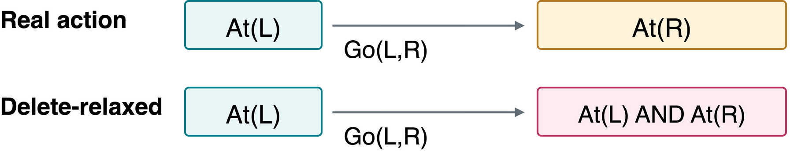
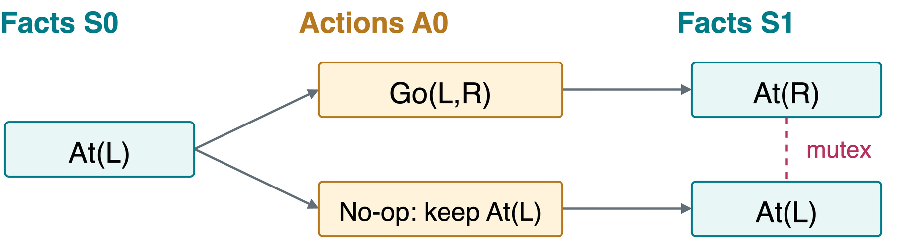
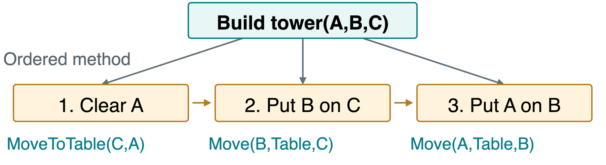

All facts in G_0 hold initially. Execute the selected actions forward: \text{MoveToTable}(C,A), \text{Move}(B,\text{Tbl},C), \text{Move}(A,\text{Tbl},B).
Actions That Threaten a Goal
An action threatens a goal if it deletes a required fact. Consider a new goal for our initial arrangement:
G=\{\text{Clear}(A),\text{Clear}(B)\}.
This goal is feasible: both facts hold when all three blocks are on the table.
Could a=\text{Move}(C,A,B) be the last action just because it clears A?
No. It adds \text{Clear}(A) but deletes \text{Clear}(B).
\text{MoveToTable}(C,A) achieves both goals directly. The rejected move can still occur earlier in a longer plan.
Heuristics for Planning
A heuristich(s) estimates remaining plan cost, here the number of moves.
An easy starting point counts goal facts not yet true. |X| means the number of facts in set X:
h_{\text{goal}}(s)=|G\setminus s|.
In our initial state, both goal facts are missing, so h_{\text{goal}}=2. A shortest plan needs 3 moves because C must first leave A.
Goal counting misses prerequisite moves. It can also overestimate: one switch could turn on two lights, achieving two goal facts in one action.
Delete Relaxation
A relaxation drops rules to make a problem easier. Delete relaxation ignores delete effects but keeps preconditions and add effects.
Robot example: L,R are locations; \text{At}(L) means the robot is at L. \text{Go}(L,R) requires \text{At}(L), adds \text{At}(R), and deletes \text{At}(L).

Fast Forward (FF) is a planner. It estimates cost by counting actions in a relaxed plan, one that solves the easier problem.
The relaxed robot can be “in both places.” This easier problem guides search, but its plan may violate the real model.
A Planning Graph
A planning graph alternates layers (levels): possible facts S_t after t steps, then possible actions A_t.
A no-op (no operation) keeps a fact true in the next layer. Mutex means mutually exclusive: facts cannot hold together, or actions conflict at that step.

Moving gives \text{At}(R); staying gives \text{At}(L). S_1 lists both possibilities, not one state where the robot is in both places.
Mutex and Graphplan
An action supports a fact if it makes that fact true. For example, \text{Go}(L,R) supports \text{At}(R).
Actions can conflict when:
One deletes another’s precondition or effect.
Their preconditions are mutually exclusive at the preceding fact layer.
Graphplan grows the graph, then performs plan extraction: a backward search for compatible actions whose effects achieve the goals.
If all goal facts appear in a layer, do we already have a valid plan?
No. The goals may be mutex, or the actions supporting them may conflict. Even non-mutex goals still need a successful plan extraction.
Planning as Boolean Satisfiability
Boolean satisfiability (SAT) asks whether true/false values can satisfy all constraints in a formula. A working choice is a satisfying assignment, also called a SAT model.
An encoding translates planning rules into Boolean constraints. Fix a horizonT: the number of available action steps. Represent states at t=0,\ldots,T and actions at t=0,\ldots,T-1.
Horizon for our blocks task
A plan within that horizon?
T=0,1,2
No
T=3
Yes: the three-move plan
Unsatisfiable means no truth assignment works. At T=2, this rules out plans within two steps. Longer plans may still exist.
SAT Encoding Ingredients
Each Boolean variable is true or false, recording a fact at a time or whether a ground action occurs.
Constraint
What it enforces
Initial state
Every initial fact’s true or false value at t=0
Goal
Required facts hold at t=T
Action preconditions
A chosen action is applicable
Action effects
Its add/delete changes occur at t+1
Frame constraints
Only actions that add/delete a fact can change it
Action choice
At most one action per step in our sequential model
Frame constraints enforce persistence. Without them, the solver could invent \text{On}(A,B) even when no action puts A onto B.
A One-Step SAT Example
Robot model: the only real action is \text{Go}(L,R).
Variables:p_t means at L at time t, q_t means at R at time t, and m_0 means the action occurs in step 0.
\rightarrow means “if … then.” \leftrightarrow means “if and only if.”
Requirement
Boolean constraint
Initial state and goal
p_0\land\neg q_0\land q_1
Precondition
m_0\rightarrow p_0
At L afterward: there before and no move
p_1\leftrightarrow(p_0\land\neg m_0)
At R afterward: there before or a move
q_1\leftrightarrow(q_0\lor m_0)
q_0=\text{false} and q_1=\text{true} force m_0=\text{true}: the robot must move.
Bounded SAT Planning
Conceptual Python pseudocode. The boundmax_horizon is the largest number of action steps to try.
def sat_plan(problem, max_horizon):for T inrange(max_horizon +1): formula = encode(problem, T) model = solve_sat(formula)if model isnotNone:return extract_actions(model)returnNone
encode builds all constraints for that horizon.
solve_sat returns a satisfying assignment or None.
extract_actions reads the selected actions in time order.
None here means no plan within the tested bound. Validate an extracted plan against the original action model.
Hierarchical Task Network Planning
A hierarchical task network (HTN) arranges tasks and their required order.
Abstract task: a high-level request, such as “build the tower.”
Method: a rule for refinement (decomposition): splitting a task into subtasks.
Primitive task: an executable action, such as \text{MoveToTable}(C,A).

Each primitive action must still satisfy its preconditions.
Planning Approaches Compared
Approach
Search representation
Key check
Progression
Complete states
Action applicable now?
Regression
Required fact sets
Action achieves goals without deleting others?
Planning graph / Graphplan
Possible facts and supporting actions by layer
Can chosen actions jointly achieve the goals?
SAT planning
Boolean assignments over time
All encoded constraints satisfied?
HTN planning
Task decompositions
Valid task splits and executable final actions?
Quick Check
Why must regression keep goal facts that the chosen action does not add?
Those facts must already hold beforehand and survive the action. Replacing the entire goal with only the preconditions can lose requirements.
The SAT formula is unsatisfiable at horizon 2. Can we conclude that the task has no plan?
No. Test a longer horizon. Our blocks example first has a solution at horizon 3.
Takeaways
Progression searches executable state transitions. Repeated-state handling prevents cycles.
Regression preserves remaining goals and adds action preconditions.
Relaxed problems help estimate cost. Planning graphs also flag conflicts.
SAT planning needs full transition constraints and a stated horizon.
HTN methods guide decomposition, with primitive actions checked against the model.
Every returned plan must work under the original preconditions, effects, and goal test.